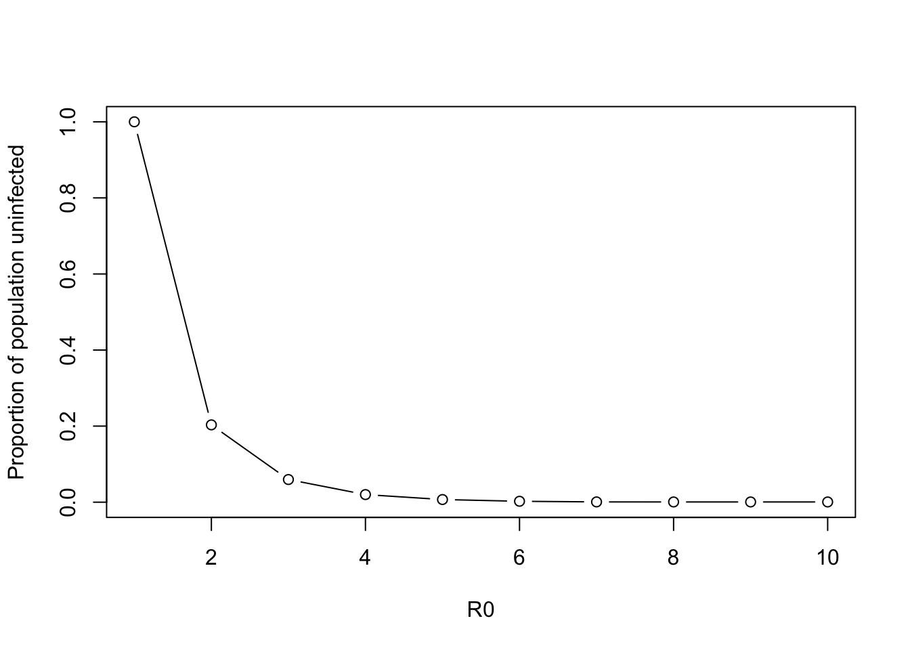

install.packages("tictoc")
install.packages("purrr")
library(tictoc)
library(purrr)P02. Programming Skills: solutions
In this practical we will gain some experience using
control statements (for loops, if/else statements etc.),
Functions,
Installing a package
(1) Control Statements
There are often multiple ways in R to calculate what you want - what you choose will be down to personal preference but there will be some guiding principles:
how fast is the code?
how easy is it to read - can other people understand what you’ve done and can you debug it easily?
Here we’ll do the same tasks using three different ways to demonstrate the logics behind these guiding principles. The task involves calculating the R0 for a range of infectiousness durations and transmission rates (i.e. beta) and calculate the probability of an epidemic.
First, let’s install and load our packages we will need
Notice that at the start and end of “ways” we implement below, we have tic() and toc() - these are commands to tell R to, respectively, start and stop a timer and output how long each code chunk took. Therefore, to compare the time taken to run each script, you will need to select everything from tic() to toc() and press Cmd-Enter
Question (a) Why do you initialise variables at the start of the script?
Answer:
so R can assign the right amount of memory, this will speed up your code
so R will not use previously defined values to the variable by mistake
The first way - using loops
tic("loop") # start a timer called 'loop' to see how quickly it runs
# intitialise variables
infectiousness.duration <- 1:10
beta <- seq(0.1, 0.5, by = 0.1)
epidemic <- matrix(NA,nrow=length(infectiousness.duration), ncol=length(beta))
# set our loop over infectious duration and transmission rate (beta)
for (index_i in 1:length(infectiousness.duration)){
for (index_j in 1:length(beta)){
#calculate R0 for each combination
R0 <- beta[index_j] * infectiousness.duration[index_i]
# evaluate whethere there is an epidemic - R0>=1
if (R0 >= 1){
epidemic[index_i, index_j] <- 1
} else{
epidemic[index_i, index_j] <- 0
}
}
}
# calculate the proportion of the values that leads to an epidemic
mean(epidemic)[1] 0.62toc() # output the time that the script tookloop: 0.013 sec elapsedInstead of accessing each element of a matrix via for loops, R can also apply operations to matrices or dataframe as chunks. This can speed up the code, reduce the amount of code, and can make it easier to read.
The second way - vectorisation
here is an example of using “expand.grid” to enumerate all the combinations of the two parameters
tic("vectorised") # start a timer called 'vectorised' to see how quickly it runs
infectiousness.duration <- 1:10
beta <- seq(0.1, 0.5, by = 0.1)
epidemic <- expand.grid(beta.val = beta, id.val = infectiousness.duration)
# the '*' operator can then be used on the columns of the data.frame to create another column called 'R0'
epidemic[, "R0"] <- epidemic$beta.val * epidemic$id.val
# we can also check the proportion of the combinations that give rise to epidemics
mean(epidemic$R0 >= 1)[1] 0.62toc()vectorised: 0.006 sec elapsedThe third way - “mapping”
Let’s calculate the same thing finally using the map function in the package purrr
tic("map") # start a timer called 'vectorised' to see how quickly it runs
infectiousness.duration <- 1:10
beta <- seq(0.1, 0.5, by = 0.1)
parametervals <- expand.grid(beta.val = beta, id.val = infectiousness.duration)
epidemic <- unlist(purrr::map2(.x = parametervals[,"id.val"],
.y = parametervals[,"beta.val"],
.f = ~(.x * .y)))
mean(epidemic >= 1)[1] 0.62toc()map: 0.007 sec elapsedHow did each of the three scripts do according to our 2 criteria?
how fast is the code?
how easy is it to read - can other people understand what you’ve done and can you debug it easily?
Which would you choose and why?
(2) Functions
For a simple “SIR” model, we can calculate the fraction of a population at the end of an epidemic that remain susceptible. We can calculate this via what is termed the ‘final size’ equation and this is written as:
\[ ln(S_{inf}) = R0*(S_{inf} - 1) \]
That is,the natural log of the proportion susceptible at the end of the epidemic is equal to R0 multiplied by 1 minus the proportion susceptible at the end of the epidemic. How do we find the solution i.e. What is \(S_{inf}\) for each value of R0? Let’s turn this expression into our own R function so we can solve it.
final.size.root <- function(s.inf) {
final.size <- R0*(s.inf - 1) - log(s.inf)
return(final.size)
}We have set the final.size.root such that whenever it evaluates 0, we have found a solution. R has some in built functions to help you solve this equation. Let’s use uniroot to find a solution. We want an answer bigger or equal to 0 and less than 1. First have a look what uniroot does, by running
?unirootTake a look at the ‘Value’ that uniroot provides: ‘A list with at least four components’. To display the value of the root, we need to tell R to use the output called `root` of the function. We can do this by using the ‘$’ notation below:
sol.root <- uniroot(final.size.root, c(0,0.9999))$root
print(sol.root)[1] 0.007005744Question (b) Did you expect R to give you an answer?
Answer: No, because we hadn’t specified what R0 was
Question (c) What variables did it use to evaluate the function?
Answer: A previously defined value of R0 which was R0 = 5
We have to make sure that we either
define all the variables that a function needs within the function itself or
pass these variables as arguments. Let’s try both ways.
First, rewrite the function so that R0 is defined within the function:
final.size.root <- function(s.inf) {
R0 <- 2
final.size <- R0*(s.inf - 1) - log(s.inf)
return(final.size)
}This looks like it could be a useful function, perhaps we don’t want to have to ‘hard code’ R. Let’s try it a second way so that R0 is passed as an argument to the function. Start by defining a function that takes both R0 and s.inf as arguments:
final.size.root.twoargs <- function(R0, s.inf){
final.size <- R0*(s.inf - 1) - log(s.inf)
return(final.size)
}Question (d) What are the arguments of this new function?
Answer: R0 and s.inf
Question (e) What is the output of this new function?
Answer: the same as before: R0*(s.inf - 1) - log(s.inf)
Now let’s pick a number for R0 that we can easily change, let’s call it rep.num
rep.num <- 2Question (f) Why have we called this rep.num and not R0?
Answer: Because we have used R0 to be the name assigned to any value of R0 that we would like. It’s good practice to choose different names for when you call functions and when you define them.
uniroot takes only one argument so we need to wrap our function inside another function that only has one argument. This is how we do it:
sol.root <- uniroot(function(s.inf){
return(final.size.root.twoargs(rep.num, s.inf))
},
c(0,0.9999))$rootNotice that we have used the keyword ‘function’ without assigning the function a name (e.g. like we did with final.size). This type of function is called an ‘anonymous function’ and they are used when you can write a simple function on one line that you do not need to keep using. The output value of the function is the output value of the two args function.
Question (g) What are all the functions that we have used to calculate the root of the equation and how many arguments do they have?
Answer: we have used three functions:
uniroot: which takes a function and a value range as argumentsan anonymous function: which takes the variable for which the solution is needed
final.size.root.twoargs: which takes two arguments R0 value and s.inf (the variable for which the solution is needed)
uniroot only gives us one root (unsurprisingly). rootSolve is a package that has functions to solve for multiple roots. You can install this package by:
Tools > InstallPackage > <type rootSolve>
type
install.packages("rootSolve")in R
Now, simply load the package so your work environment has access to all its functions
library("rootSolve")We will now use the rootSolve function uniroot.all to find all the solutions of the final size equation. Let’s use the same syntax as we did before, remembering to define rep.num again
rep.num <- 2
sol.all.roots <- uniroot.all(function(s.inf){
return(final.size.root.twoargs(rep.num, s.inf))
},
c(0,1))
print(sol.all.roots)[1] 1.0000000 0.2032782Question (h) What is the epidemiological interpretation of these two roots?
Answer: The first is the disease free equilibrium, the second is the epidemic state
Finally, let’s see how our R0 changes our solution values. We can do this with a loop as above
r0.vector <- 1:10
sol.all.roots <- vector(length = length(r0.vector))
for (r0 in r0.vector){
sol.all.roots[r0] <- min(uniroot.all(function(s.inf) final.size.root.twoargs(r0, s.inf), c(0,1)))
}
par(new=FALSE)
plot(r0.vector, sol.all.roots, type= "b", xlim=c(1,10), ylim=c(0,1), ylab = "Proportion of population uninfected", xlab = "R0")
Can you rewrite the for loop calculation above in a different way?
Hint: use the purrr::map function - but note that previously we had 2 variables and used map2 . Now we only have one variable, so we will use purrr::map
tic("root map")
sol.all.roots <- unlist(
purrr::map(.x = r0.vector,
.f= ~min(uniroot.all(function(s.inf) final.size.root.twoargs(.x, s.inf), c(0,1)))))
toc()root map: 0.006 sec elapsed